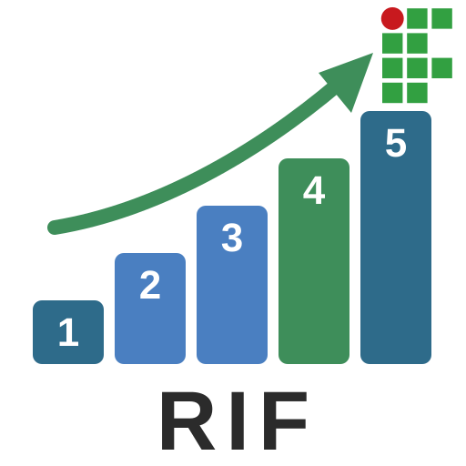

Método
Método de estudo
Estude em sessões de 30 minutos . Em cada sessão:
Leio o passo do dia e o exemplo resolvido. Resolvo questões de provas anteriores do IFMG pelos 5 passos, por escrito. Confiro com a resolução em 5 passos e depois com a condensada. Anoto o que errei e em que passo errei. Sessões curtas e frequentes rendem mais do que uma sessão longa e rara. Anotar o passo em que errei mostra o
que eu preciso treinar.
Os 5 passos
Os 5 passos servem para você organizar as ideias de duas maneiras diferentes: uma envolve gráficos, equações e cálculos; a outra, evidências em textos, imagens e fontes.
Pensamento Quantitativo
Matemática e Ciências da Natureza
O que a questão quer? Reescrever o que a questão quer que eu responda O que eu tenho? Separar dados: números, medidas e unidades Qual é o desenho? Escolher estratégia ou estimar o resultado Minha solução Equacionar, calcular e comparar com as alternativas Confiro e respondo Conferir se o número faz sentido, comparar e marcar uma ou mais alternativas Pensamento Qualitativo
Língua Portuguesa e Ciências Humanas
O que a questão quer? Reescrever o que a questão quer que eu interprete O que eu tenho? Separar evidências do texto, da imagem e da fonte Como eu separo as afirmações? Propor uma leitura com base nas evidências Julgo uma por uma Confrontar cada alternativa com as evidências Confiro e respondo Marcar e justificar em uma frase A resolução condensada
É o mesmo caminho dos 5 passos, em poucas linhas, do jeito que ele cabe no tempo da prova.
Começar pela T0A
Questões
Questões do IFMG
As provas do processo seletivo do IFMG de 2023 a 2026, questão por questão. Cada uma tem a resposta, a
resolução em 5 passos e a resolução condensada.
Filtre por ano, por área ou pelo tipo de pensamento, ou procure uma palavra.
Abrir as 190 questões
As questões anuladas pela banca ficaram de fora.
Instalar
Instalar e levar no pen drive
Você está usando o Rumo ao IFMG do pen drive . Ele funciona sem internet.
Para pegar a versão mais nova, baixe o pacote de novo no site, quando tiver internet.
Sobre
Sobre o projeto
Rumo ao IFMG (RIF) é um projeto de ensino do IFMG Campus Ouro Preto (art. 3.º, III, da
IN PROEN/IFMG n.º 2/2019: metodologias e materiais pedagógicos inovadores).
Público: estudantes do 9.º ano das escolas municipais de Ouro Preto que vão fazer o processo seletivo dos cursos
técnicos integrados para ingresso em 2028. Período do piloto: setembro a dezembro de 2027.
Os 5 passos são a versão curta da Resolução Científica do Problema (RCP) , o protocolo de 8 etapas
usado na disciplina Física Conceitual 1 do curso técnico em Mineração: as mesmas 8 etapas, agrupadas em 5 e escritas
na linguagem do 9.º ano. Quem entra no IFMG reencontra o mesmo caminho na 1.ª série.
Este site não pede nome nem nenhum dado pessoal.
Equipe
Coordenador
Julio Azevedo — Professor do Ensino Técnico e Tecnológico do IFMG, na Área de Física do campus
Ouro Preto desde 1985. Criador do Núcleo de Inovação e Desenvolvimento de Experimentos Científicos (NIDEC) em 2016.
Colaborador
Felipe Beato — Professor, pesquisador e colaborador do NIDEC. Licenciado em Física, Mestre em Física
dos Materiais.
Monitoria
Dois estudantes voluntários da 2.ª ou da 3.ª série dos cursos técnicos integrados do campus .
Agradecimentos
Às escolas municipais de Ouro Preto que abrem as portas para o piloto, e ao IFMG Campus Ouro Preto.
Rumo ao IFMG

Seu caminho até o IFMG
Este site ajuda você, do 9.º ano, a se preparar para o processo seletivo dos cursos técnicos
integrados do IFMG Campus Ouro Preto.
Você vai treinar um jeito de estudar em sessões de 30 minutos e um caminho de
5 passos para resolver qualquer questão da prova, com as questões de verdade das provas de
2023 a 2026.
Nas abas da lateral esquerda estão o método, as questões, como instalar o site ou levá-lo
no pen drive, e quem faz o projeto.
Comece pela T0A e siga uma trilha por semana , na ordem.
Bons estudos.
T0A T01 T02 T03 T04 T05 T06 T07 T08 T09 T10 T11
T0A · Boas-vindas e os 5 passos
T01 · em breve · abre em 2027
T02 · em breve · abre em 2027
T03 · em breve · abre em 2027
T04 · em breve · abre em 2027
T05 · em breve · abre em 2027
T06 · em breve · abre em 2027
T07 · em breve · abre em 2027
T08 · em breve · abre em 2027
T09 · em breve · abre em 2027
T10 · em breve · abre em 2027
T11 · em breve · abre em 2027